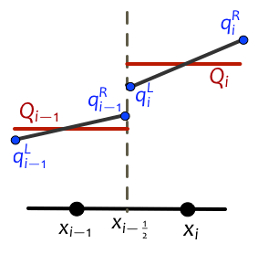

Riemann solvers¶
The Riemann solver defines the hyperbolic equation that is being solved and does the bulk of the computational work – it is called at every cell interface at every time step and returns the information about waves and speeds that is needed to update the solution.
The directory $CLAW/riemann/src contains Riemann solvers for many applications, including advection, acoustics, shallow water equations, Euler equations, traffic flow, Burgers’ equation, etc.
One-dimensional Riemann solver¶
Understanding the 1-dimensional solver is a critical first step since in 2 or 3 dimensions the bulk of the work is done by a “normal solver” that solves a 1-dimensional Riemann problem normal to each cell edge. In multiple dimensions it is possible to use additional transverse solvers; see below.
See Wave-propagation algorithms and [LeVeque-FVMHP] for more details about how the algorithms in Clawpack use the Riemann solution.
The calling sequence for the 1-dimensional Riemann solver subroutine rp1 is:
subroutine rp1(maxm, num_eqn, num_waves, num_aux, num_ghost, num_cells,ql,qr,auxl,auxr,wave,s,amdq,apdq)
! Input arguments
integer, intent(in) :: maxm, num_eqn, num_waves, num_aux, num_ghost, num_cells
double precision, intent(in), dimension(num_eqn, 1-num_ghost:maxm+num_ghost) :: ql,qr
double precision, intent(in), dimension(num_aux, 1-num_ghost:maxm+num_ghost) :: auxl,auxr
! Output arguments
double precision, intent(out) :: s(mwaves, 1-num_ghost:maxm+num_ghost)
double precision, intent(out) :: wave(num_eqn, mwaves, 1-num_ghost:maxm+num_ghost)
double precision, intent(out), dimension(num_eqn, 1-num_ghost:maxm+num_ghost) :: amdq,apdq
Note that the names of the integer parameters used in this calling sequence have changed in recent versions, and many solvers still use the old names. The correspondence is:
- meqn = num_eqn, the number of equations in the system,
- mwaves = num_waves, the number of waves in each Riemann solution,
- mx = num_cells, the number of grid cells,
- maux = num_aux, the number of auxiliary variables,
The input data consists of two arrays ql and qr. The value ql(:,i) is the value \(q_i^L\) at the left edge of the i’th cell, while qr(:,i) is the value \(q_i^R\) at the right edge of the i’th cell, as indicated in this figure:
In the classic Clawpack algorithm, \(q_i^L = q_i^R\) and both values agree with \(Q_i\) , the cell average. More flexibility is allowed because in some applications, or in adapting clawpack to implement different algorithms, it is useful to allow different values at each edge. For example, in the SharpClaw algorithms, we define a piecewise polynomial function within the grid cell (as illustrated in the figure) and then solve the Riemann problems between these values. This approach to high-resolution methods is discussed in Chapter 6 of [LeVeque-FVMHP], and the SharpClaw algorithms are discussed in [KetParLev13].
Note that the Riemann problem at the interface \(x_{i−1/2}\) between cells \(i − 1\) and \(i\) has data:
- Left state: \(q_{i-1}^R\) = qr(:,i-1),
- Right state: \(q_{i}^L =\) ql(:,i).
This notation can be confusing since in the literature we often use \(q_\ell\) to denote the left state and \(q_r\) to denote the right state in specifying Riemann data.
The Riemann solver rp1 also has input parameters auxl and auxr that contain values of the auxiliary variables if these are being used (see Specifying spatially-varying data using setaux). Normally auxl(:,i) = auxr(:,i) = aux(:,i) when the Riemann solver is called from the classic Clawpack routines.
The routine rp1 must solve the Riemann problem for each value of i, and return the following (for i=1-num_ghost to mx+num_ghost):
- amdq(1:meqn,i) = the vector \({\cal A}^-\Delta Q_{i-1/2}\),
- apdq(1:meqn,i) = the vector \({\cal A}^+\Delta Q_{i-1/2}\),
- wave(1:meqn,i,p) = the vector \({\cal W}^p_{i-1/2}\),
- s(i,p) = the wave speed \(s^p_{i-1/2}\) for each wave.
This uses the notation of Wave-propagation algorithms and [LeVeque-FVMHP].
Here are some examples of one-dimensional Riemann solvers that may be helpful as a starting point for development of new solvers:
Pointwise Riemann solvers¶
Most of the solvers available are written (as described above) in vectorized form, meaning that there is a loop over a 1-dimensional slice of the grid inside the Riemann solver itself. This used to be necessary in order to get good performance, but tests with modern compilers suggest that it is no longer so. Clawpack 5.x (both the Fortran codes and PyClaw) also supports the use of pointwise Riemann solvers, in which the solver routine solves a single Riemann problem and does not loop over the grid. This allows the solver to be written in a more natural way, with q_l and q_r referring to the left and right states in the Riemann problem.
In a pointwise Riemann solver, the solver routine should be named by appending _ptwise to the usual name; i.e. rp1_ptwise in 1D, or rpn2_ptwise and rpt2_ptwise in higher dimensions. When compiling the solver, it is necessary to link in the appropriate “harness”:
- $CLAW/Riemann/src/rp1_ptwise.f90 in 1D;
- $CLAW/Riemann/src/rpn2_ptwise.f90 and $CLAW/Riemann/src/rpt2_ptwise.f90 in 2D.
No harness has been written yet for 3D pointwise solvers.
The calling sequence for a 1D pointwise solver is:
subroutine rp1_ptwise(num_eqn, num_aux, num_waves, q_l, q_r, aux_l, aux_r, wave, s, amdq, apdq)
! Input Arguments
integer, intent(in) :: num_eqn, num_aux, num_waves
real(kind=8), intent(in out) :: q_l(num_eqn), q_r(num_eqn)
real(kind=8), intent(in out) :: aux_l(num_aux), aux_r(num_aux)
! Output arguments
real(kind=8), intent(in out) :: wave(num_eqn, num_waves)
real(kind=8), intent(in out) :: s(num_waves)
real(kind=8), intent(in out) :: apdq(num_eqn), amdq(num_eqn)
Examples of pointwise Riemann solvers:
f-wave Riemann solvers¶
As described in f-wave formulation, for spatially-varying flux functions it is often best to use the f-wave formulation of the wave-propagation algorithms. This can be implemented in Clawpack by providing a suitable Riemann solver that returns f-waves instead of ordinary waves, obtained by decomposing the flux difference \(f(Q_i,x_i) - f(Q_{i-1},x_{i-1})\) into f-waves using appropriate eigenvectors of the Jacobian matrices to either side of the interface. The Riemann solver has the same form and calling sequence as described above; the only difference is that the output argument wave should return an array of f-waves. while amdq and apdq have the same meaning as before.
In order to indicate that the Riemann solver returns f-waves:
- In classic Clawpack, AMRClaw, or Geoclaw, the parameter runclaw.use_fwaves in setrun should be set to True, see Specifying classic run-time parameters in setrun.py.
- In PyClaw, one should set solver.fwave = True.
2D Riemann solvers¶
In two dimensions, all Clawpack algorithms require a normal Riemann solver, that solves a one-dimensional (planar) Riemann problem in the direction normal to a cell interface. Some Clawpack algorithms also make use of a transverse Riemann solver.
The calling sequence for the normal Riemann solver in 2D is:
subroutine rpn2(ixy, maxm, num_eqn, num_waves, num_aux, num_ghost, num_cells, ql, qr, auxl, auxr, wave, s, amdq, apdq)
! Input
integer, intent(in) :: ixy, maxm, num_eqn, num_waves, num_aux, num_ghost, num_cells
real(kind=8), intent(in out) :: ql(num_eqn, 1-num_ghost:maxm+num_ghost)
real(kind=8), intent(in out) :: qr(num_eqn, 1-num_ghost:maxm+num_ghost)
real(kind=8), intent(in out) :: auxl(num_aux, 1-num_ghost:maxm+num_ghost)
real(kind=8), intent(in out) :: auxr(num_aux, 1-num_ghost:maxm+num_ghost)
! Output
real(kind=8), intent(in out) :: wave(num_eqn, num_waves, 1-num_ghost:maxm+num_ghost)
real(kind=8), intent(in out) :: s(num_waves, 1-num_ghost:maxm+num_ghost)
real(kind=8), intent(in out) :: amdq(num_eqn, 1-num_ghost:maxm+num_ghost)
real(kind=8), intent(in out) :: apdq(num_eqn, 1-num_ghost:maxm+num_ghost)
The inputs and outputs have the same meaning as in 1D. The additional input parameter ixy is used to indicate whether the solver is sweeping in the x direction (ixy=1) or the y direction (ixy=2).
TODO: Continue description – 3d, transverse solvers.
Using a custom solver¶
Many solvers are provided in the Clawpack Riemann repository. If you develop your own Riemann solver, you can use it as follows:
With the Fortran codes (Classic, AMRClaw, Geoclaw) simply compile your solver and link it into the executable.
With PyClaw, if you have written your solver in Python then you can simply import it. If you have written it in Fortran, first compile it with f2py via a command like
f2py -c my_riemann_solver.f90 -m solver_name
Here solver_name can be replaced by whatever you like. Then in your PyClaw script, simply import the Riemann solver and pass it as the sole argument when you initialize your ClawSolver object; e.g.:
import solver_name
...
solver = pyclaw.ClawSolver1D(solver_name)
Adding a solver to the Riemann repository¶
If you have developed a new Riemann solver, please let us know! We’d love to include it in the Clawpack Riemann repository so that others can make use of it. You can simply send us a note on the claw-users google group, or issue a pull request on Github.
If you want to make your solver fully functional with the various Clawpack codes, then follow the additional steps outlined in the Riemann README.

Version 5.4.1
Table Of Contents
Related Topics
- Documentation overview
- Previous: Riemann Solver Package
- Next: Shallow water Riemann solvers in Clawpack